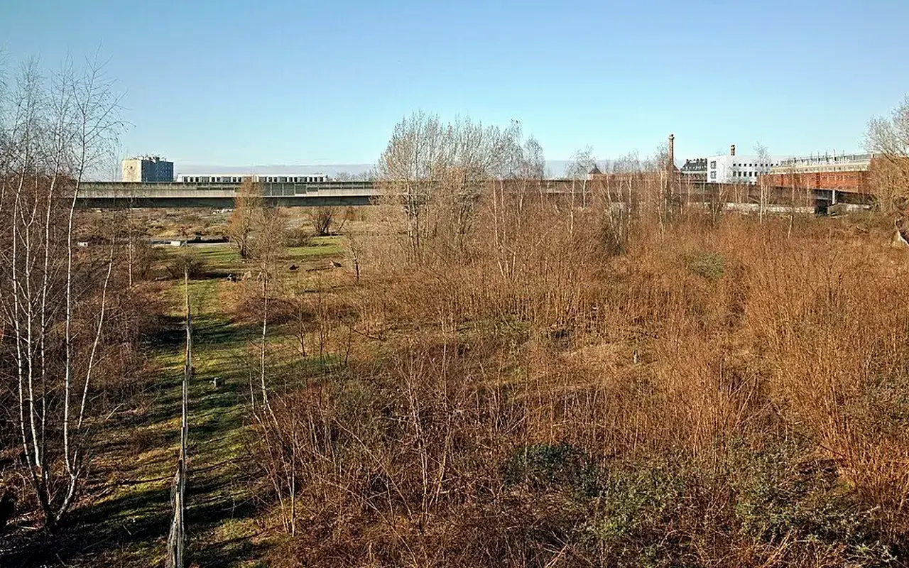

FAQ centrale
Questions frequentes
Une FAQ centrale pour comprendre rapidement le rôle de TVF, les parcours possibles, les limites du dispositif et les prochaines etapes de la plateforme.

Les questions essentielles
Qui sommes-nous ?
TVF est une association nationale en création, basee à Saint-Étienne, qui veut redonner vie aux logements vacants, commerces fermés, friches, terrains inutilisés et matériaux encore utiles.
TVF est-elle deja une grande structure opérationnelle ?
Non. Le site préparé une plateforme nationale progressive. Les pages distinguent les dispositifs dans son déploiement national, les projets pilotes et les résultats qui seront publies uniquement après validation.
Pourquoi autant de prudence sur les chiffres ?
Parce qu'un site institutionnel credible ne doit pas transformer des objectifs en résultats. Les chiffres nationaux cites servent au contexte ; les chiffres TVF viendront de données reelles.
Signalements, matériaux et benevolat
Comment signaler un logement vacant ou un commerce ferme ?
La page Signalement permet de transmettre le type de lieu, la commune, l'adresse ou un repere, une description, une photo eventuelle et un contact facultatif.
Que se passe-t-il après un signalement ?
Le signalement est qualifié. Il peut être complétée, ajourné, oriente ou rattache à une démarché territoriale. Il n'est pas automatiquement publie.
Puis-je donner des matériaux ?
Oui, mais la Banque de Matériaux TVF n'est pas une plateforme de distribution libre. Les ressources sont etudiees puis affectées à des projets valides lorsque c'est pertinent.
Comment devenir bénévole ?
Un bénévole peut aider à documenter, accueillir, organiser, cartographier, animer, participer à des actions encadrées ou soutenir une antenne planifiée locale.
Cooperation territoriale
Un propriétaire garde-t-il son bien ?
Oui. Dans le programme Bien Solidaire à Usage Partage, le propriétaire conserve la propriété. Une convention peut definir un usage temporaire, un loyer solidaire ou un partage de revenus.
TVF garantit-elle les travaux ou les subventions ?
Non. TVF peut rechercher des solutions, mobiliser des acteurs et structurer un dossier, mais ne garantit ni financement, ni travaux, ni delai.
Une collectivité peut-elle cooperer avec TVF ?
Oui, par diagnostic territorial, mise à disposition de ressources, signalement de biens, convention de cooperation ou appui à des projets utiles aux habitants.
Une entreprise peut-elle contribuer ?
Oui, par dons de matériaux, mecénat, compétences, locaux, expertise ou soutien à des projets territoriaux, sous réserve d'une contribution confirmee et publiable.
Données, publication et dons
Les adresses signalees sont-elles publiques ?
Non, pas automatiquement. TVF doit vérifier, moderer et obtenir les autorisations nécessaires avant toute publication sensible.
Comment les dons seront-ils utilisés ?
Les dons doivent soutenir la structuration de l'association, les outils, les diagnostics, l'accompagnement territorial et les projets valides. Les avantages fiscaux ne sont pas annonces sans cadre officiel.
Comment créer une antenne locale ?
Une antenne suppose une candidature, un diagnostic territorial, des référents, une formation, un cadre national et une validation progressive.
Ou trouver les sources ?
La page Sources et données recense les organismes publics et les règles de lecture utilisées par TVF.
Vous ne trouvez pas votre réponse ?
Le formulaire de contact permet de poser une question ou d'orienter une demande vers le bon parcours.
Les réponses essentielles selon votre rôle
Collectivité
TVF peut aider à organiser un diagnostic, une cartographie, une fiche projet, une convention et des indicateurs territoriaux.
Voir le parcoursPropriétaire
Le propriétaire conserve son bien. Toute remise en usage doit être cadrée par diagnostic, autorisation et convention.
Voir le parcoursEntreprise
Une entreprise peut contribuer par matériaux, compétences, locaux, mécénat ou logistique avec traçabilité.
Voir le parcoursFinanceur
Un financement doit être rattaché à un projet, un budget, un calendrier, des preuves et un reporting.
Voir le parcoursCitoyen
Un citoyen peut signaler un lieu, proposer une ressource, rejoindre une mission ou aider à documenter un besoin.
Signaler
Passer à l’action
Choisir le parcours adapté à votre rôle
Chaque demande doit être orientée vers un cadre clair : besoin territorial, propriétaire, ressource, financement, bénévolat ou coopération institutionnelle.